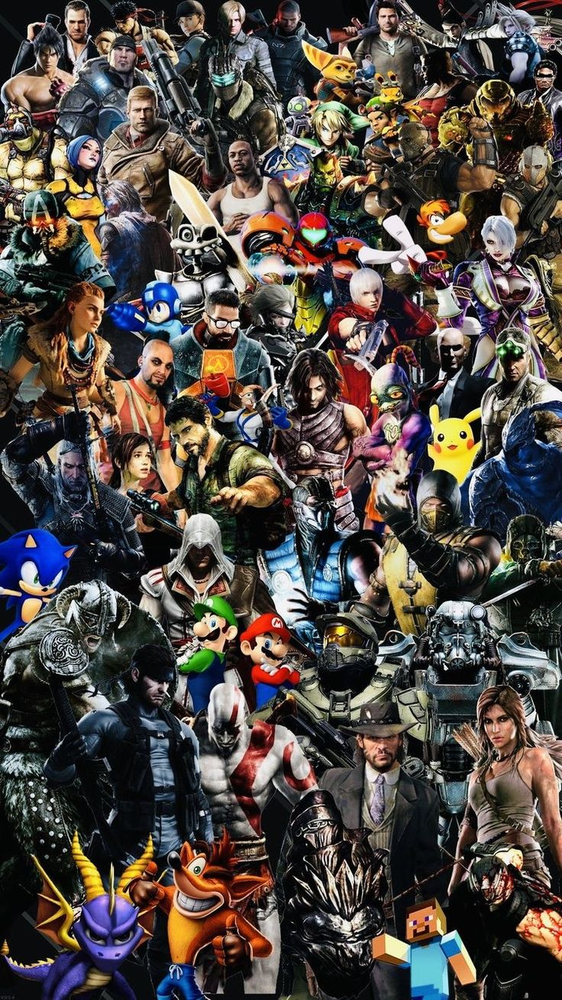

In my free time I love playing sports such as basketball and football. Recently I participated in a basketball event called SlamJam Skopje which was a 3x3 basketball tournament held in Skopje with 3 of my friends. I also play football regularly with my friends in the neighbourhood, as well as having trained tennis for 4 years.

I am a big fan of East Asian culture especially Japan and China, and that is why I trained Aikido for 4 years which is a martial art where you have to use your opponents momentum against them. Each martial art teaches you respect and discipline and that violence is almost never the answer and should be avoided at all costs.
From the moment my parents bought me my first very own PS3, gaming became one of my greatest passions and a favorite pastime. I was hooked by the immersive worlds, captivating stories, and the thrill of overcoming challenges in games such as God of War, Assassin's Creed, FIFA, NBA2K, League of Legends, Skyrim... The fact that I can sit in a discord call with my friends and have fun conversations makes gaming not just a hobby, but a fun social activity.
